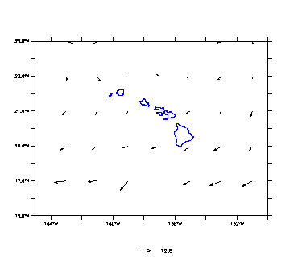
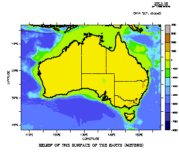

FAQ
Detailed Coastlines and Borders
Detailed Coastlines and Borders
Questions:
I need better resolution for coastlines on my plots.
I would like to display state and country political boundaries on my plots.
Example:
| Hawaii detail | Australia with borders |
|  |  |
Solution:
(First, try Ferret's land_detail script, which uses data from the GMT (Generic Mapping Tools) site at
https://www.soest.hawaii.edu/soestwp/research/data/generic-mapping-tool-gmt/ (the GMT intermediate level of resolution). A demo of land_detail.jnl is at
land_detail_demo.html)
The USGS has a Coastline Explorer server:https://rmgsc.cr.usgs.gov/gce/ which appears to be a successor to the previous Coastline Extractor tool The Coastline Extractor made availablefor download coastline, boundary, and river segments with a choice of resolutions. We have not used this tool, but hope that the ideas here will be useful in converting updated coastline data for use by the "go land" scripts.
We have recently discovered a resource for up-to-date political boundaries, see the section below.
For Coastline Extractor data, Proceed as follows:
- Get coastline/border data from the Coastline Extractor
- Select the database you want.
- Select Mapgen as Coast Format Options
- Submit your request
- Save the data file
- Fix up the file for Ferret
- With your favorite editor, change all:
# -b to -1E+34 -1E+34
- With your favorite editor, change all:
- Note the number of lines
- wc -l filename
- With Ferret:
- DEFINE AXIS/Z=1:number_of_lines:1 vector_length
- DEFINE GRID/Z=vector_length vector_grid
- FILE/VAR=lon,lat/G=vector_grid filename
- PLOT/VS/LINE lon,lat
- Add rivers or/and political boundaries from other files. Political boundariesaren't necessarily up to date, but it may be possible for you to locate by latitude and longitudeany segments you want to remove from the data file.
For up-to-date changes in political boundaries, try the GADM database of Global Administrative Areas. This is intended to return data for GIS tools, but it can give us data that Ferret can read.
Choose the country and ask for the Google Earth kmz output. The tool will show a map. If it looks up-to-date, then download the Level 0 file - the data for the national boundary. This is a compressed kml file. From the Unix command line,
% unzip countryA.kmz
The result is a kml file, countryA.kml. Rename it, for instance to countryA.dat, and edit that. Remove all of the kml tags at the start and end of the file, that is all of the lines where text is enclosed in brackets < >. If the boundary consists of multiple pieces, such as a set of islands, then there are additional tags between the individual parts of the boundary. Insert a line containing the values
-1E+34 -1E+34
between each piece. This means that you are replacing each instance of a block of tags,
</coordinates>
</LinearRing>
</outerBoundaryIs>
</Polygon>
<Polygon>
<outerBoundaryIs>
<LinearRing>
<coordinates>
with
-1E+34 -1E+34
Now, proceed as above - read the ascii file with a FILE command, and plot it, or once you have read it in, save it as a netCDF file for future use. Please share any work along these lines with the PyFerret community.
Example script:
The file hawaii.dat was downloaded from the server using the World Vector Shoreline data, from 18N to 23N and -162 to -152 longitude. The data was edited as describedabove, and there are 11613 longitude,latitude pairs in it.
Note that the longitudes are returned as East longitude. Here we specify longitude to Ferret as a West longitude, so we need to plot (360+lon)
! Overlay detailed map of Hawaii on a vector plot. USE coads SET REGION/X=165w:150w/Y=15:25/T="15-FEB-1993" VECTOR/title=""/nolabel uwnd,vwnd DEFINE AXIS/Z=1:11613:1 vec_len DEFINE GRID/Z=vec_len vec_grid FILE/VAR=lon,lat/G=vec_grid hawaii.dat PLOT/VS/LINE/OVER/COLOR=BLUE/NOLABEL 360+lon,lat